每个人心中大抵都有一个隐居梦，群山掩映着一个个古村落，在山水之间，寻一处人家，邻里相望，鸡犬相闻，日出而作，日落而息。
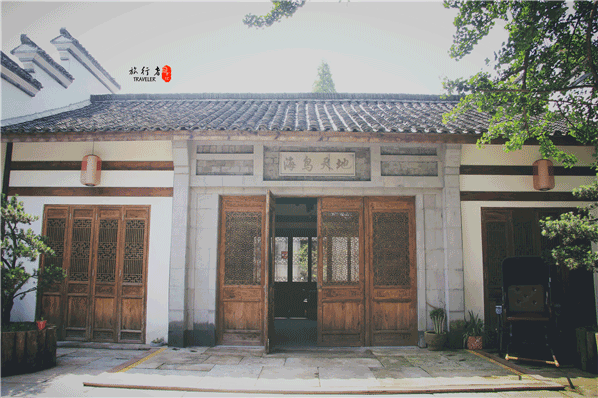
闲时漫步田野，稻谷的芳香扑鼻，阳光和煦而温暖，当你抬起头或者蓦然回首时，一定会有一种穿越了时空的错觉，也一定瞬间就懂了陶渊明那句“采菊东篱下，悠然见南山”吧。
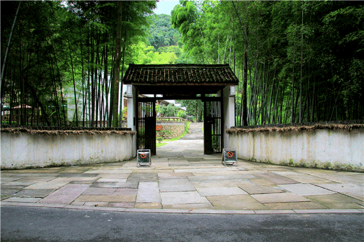
繁忙的工作中，总想找个周末带上家人，远离城市的喧嚣，走进乡村田野。河上海鸟天地民宿距杭州40公里，坐落在萧山河上镇，也是这次度假的目的地。
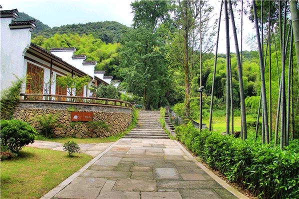
客栈本身就是白墙黛瓦的明清建筑，和美丽的山村融为一体。清幽古朴，曲径通幽，她不止是一个客栈，更像是一座古城。
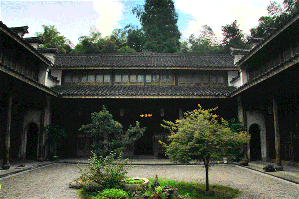
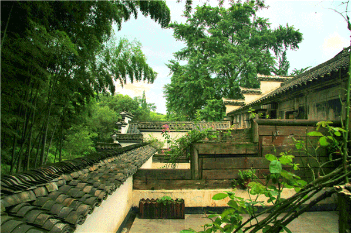
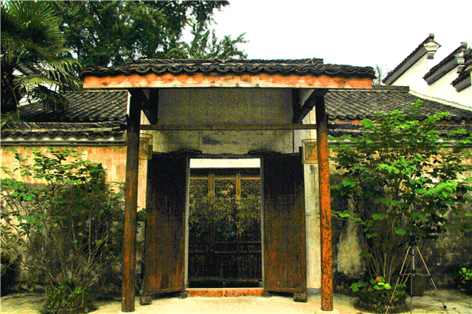
不仅有古典的外观，河上民宿的室内设计也十分精致。中式灯笼、纯木家具、江南水墨壁画，一切是古香古色的。
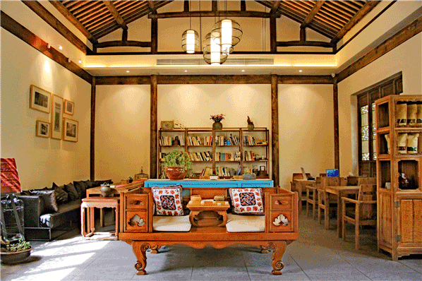
当一缕阳光晒向屋内，这一刻内心突然好安静，也许这就是我想要的民宿。
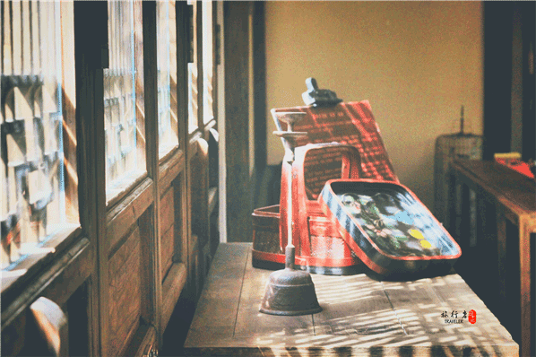
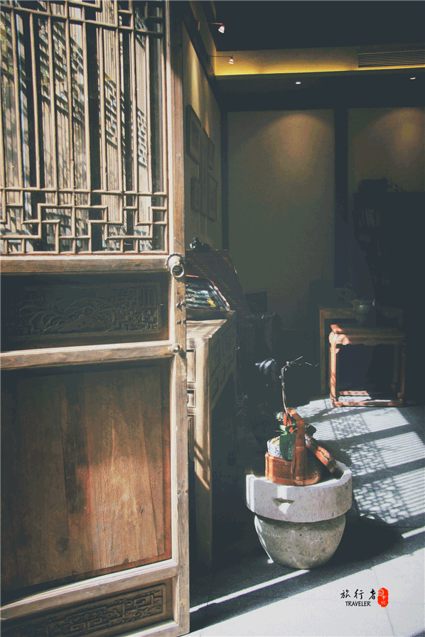
办理好了入住，店长亲切的为我讲解民宿的故事。每次住宿的地方我总是喜欢了解它文化，了解它的故事。民宿门前是片大大的草场，有各种娱乐设施，走在草坪上，听着讲述的故事，仿佛身在故事中。
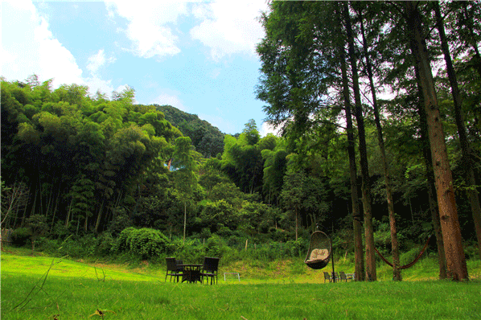
故事是这样的： 老宅的主人姓卜。清朝末年，卜先生在宁波开了一家面店，生意不错。一天，一位即将回国的美国华侨，登船前来到卜先生的店里吃面，离店时竟把一只皮箱落下了。卜先生打烊时才发现这只皮箱，但已无法找到失主，只好把皮箱小心收藏，等待着失主前来认领。 皮箱里装的是什么？会是很值钱的东西吗？卜先生不知道，他只知道，这是一个即将漂洋过海回家游子的行李，是别人的东西，不管值不值钱，他都不能据为己有，甚至打开箱子看看也不应该。 日子一天天过去，皮箱的主人依然没有回来。过了几年，卜先生的面店的生意渐渐萧条，日子越过越艰难，但他始终没有打开那只皮箱。他觉得，失主一定会回来寻找这只箱子的。终于，有一天，那位叫威廉的美国华侨果真出现在卜先生的面店，卜先生将皮箱物归原主，觉得像完成了一项使命。能够找回失物，威廉先生已经喜出望外，发现皮箱原封未动地保存得那么好，更令他感激莫名，他要重酬卜先生，被婉言谢绝。从此，威廉和卜先生成了好朋友。 之后的岁月里，战乱四起，卜先生的面店终于开不下去了，威廉得知消息，邀请他到上海帮忙打理生意。卜先生答应了威廉，给他做账房先生，并全家前往上海生活。 没多久，威廉决定回美国定居，临走前将生意托付给了卜先生。 再后来，卜先生变成了卜老先生，他也要告老还乡了。他会到了萧山的老家，在河上下门村选了一块环境优美，闹中取静的“风水宝地”，建起了一幢大大的四合院。
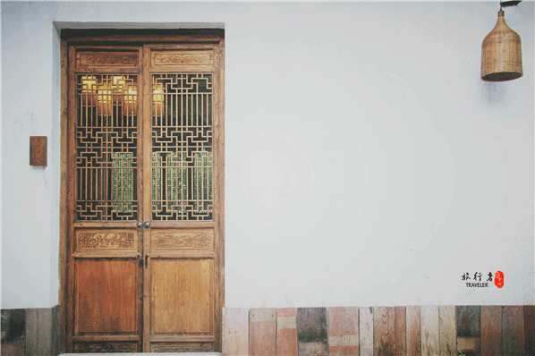
百年沧桑，这幢老宅依然隐居在绿水青山间。浙江海鸟发现了她，将其翻新、改造成为萧山第一家高端精品民宿。她将以焕然一新的风貌迎接八方来客，一起来到这间有温度的房子里，享受淳静的自然，回味人间的真善美，回忆那个纯真的年代。 ——回来了就好！
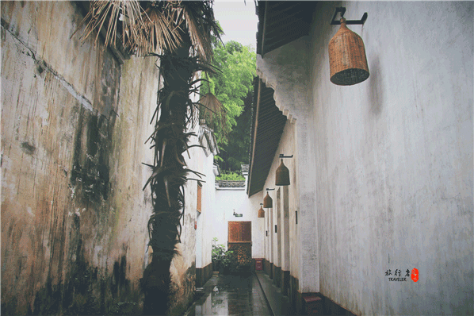
来到乡村山间，最期盼的当然是新鲜的农家菜了。忘记城市馆子的味精和调味，为你奉上食物最本味的一面。值得一提的是，与其他民宿的阿姨掌勺不同，这里的菜肴可是远近文明哦，每天周边许多吃货奔赴而来。
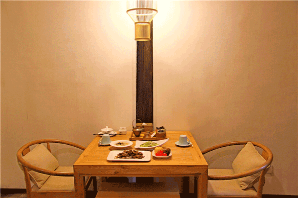
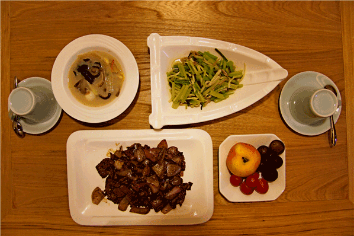
房间内部也以原木装饰为主，微暖的色调，踩在木地板上的跫音都给人以安定感。还有不可缺的复试双层，露台外是青山灰瓦，山中与幽人对坐把酒品茗皆是幸事。无论哪种都需要慢的心境慢的心情。

房间使用原木与白两种原色，设置简洁舒适。简洁却绝不意味着简单，景致的茶具，错落有致的摆设物件，就连吊灯的设计都是独一无二的。
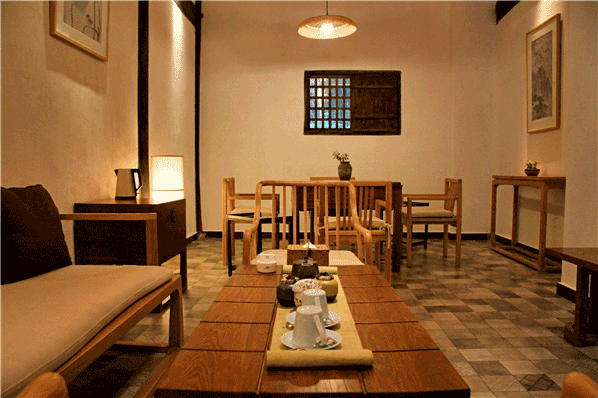
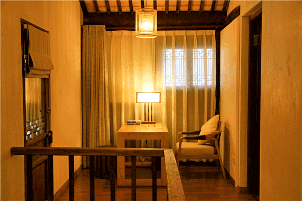
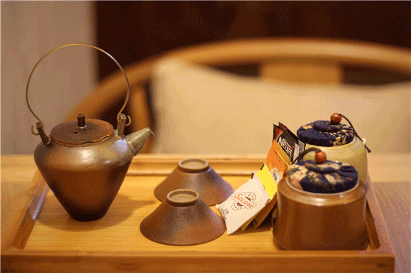
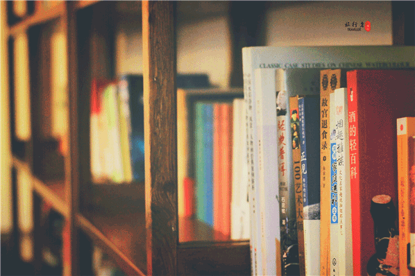
透过窗外总是美景，或是翠绿欲滴的园景，或是山中挺拔的翠竹，天气好时，甚至还能望见漫天星轨。世界级品牌床垫上上加铺软垫，无比柔软舒适，配上高档的床品布草，以及遮光效果极好的麻织窗帘，成全了我一夜好眠。
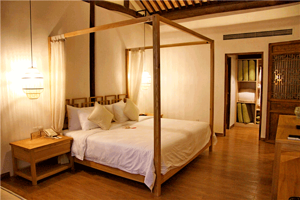
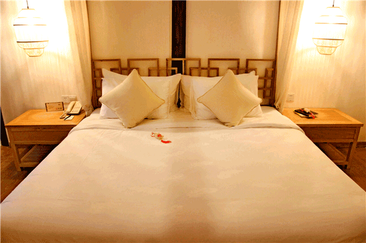
最值得一提的是套房的露天浴室。这间房不仅设了室内浴室，还特意在二楼的小院里设计了一个露天浴室。躺在露天的浴缸里，驱散一天的疲惫，恍惚间仿佛回到了远古时代，星空为被，大地为床。
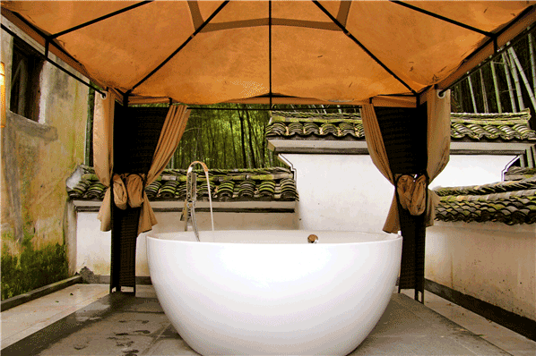
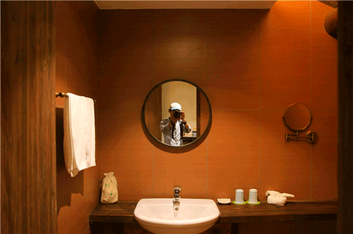
每个人需要一个类故乡的地方来慰藉乡愁，如果你真的找不到，那就去河上海鸟天地，是不是故乡不重要，心安之处即故乡。